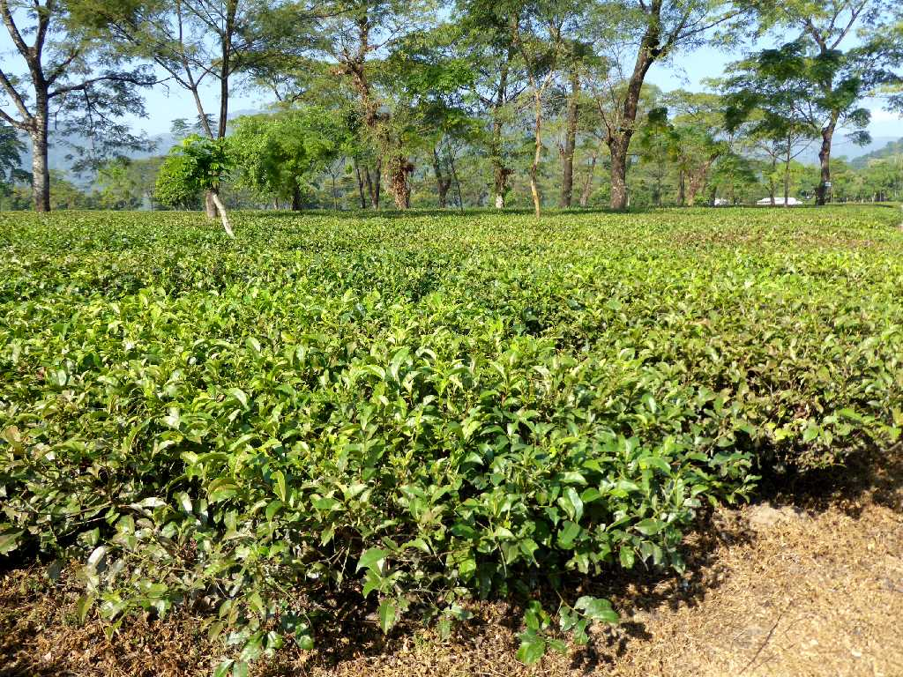
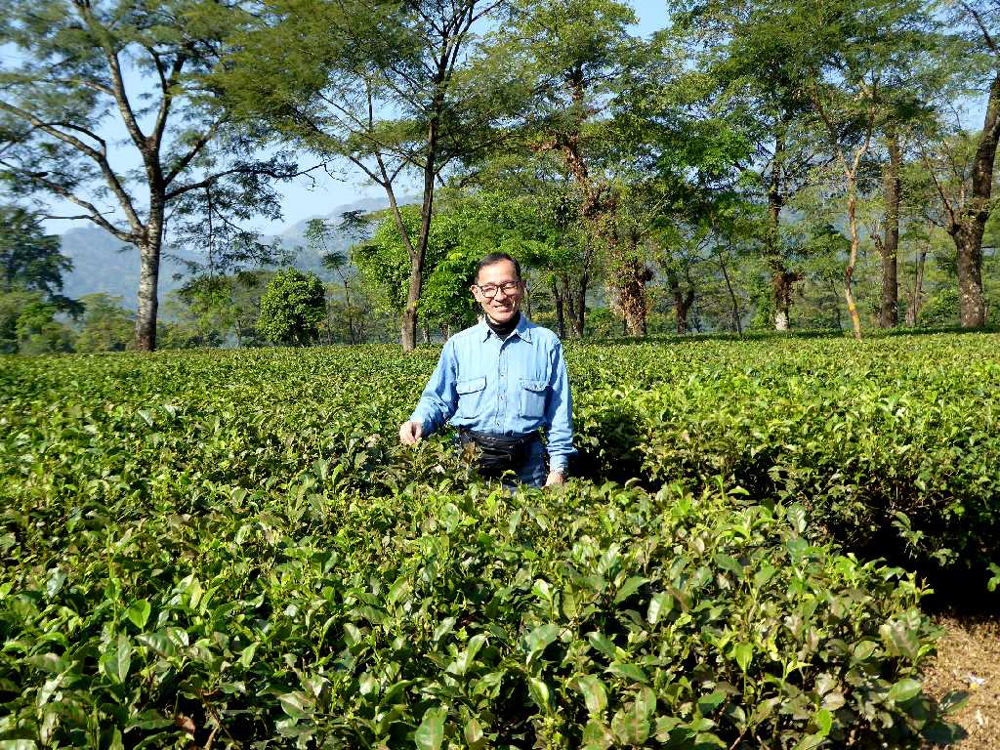

Longview Tea Garden West Bengal
ヒマラヤの高地ダージリンから西ベンガル州の低地に降りてくると中国原産の茶畑(ダージリンティー)が無くなりインド原産の茶畑(アッサムティー)が広がる世界最大の紅茶の生産地に入る

December 1 2017 Longview Tea Garden
香りのよいダージリンティーに比べパンチの効いたコクと味わいが濃いアッサムティーはミルクティーとして飲まれる